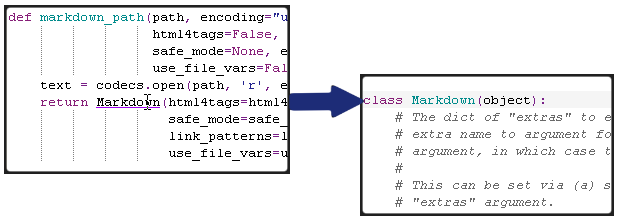
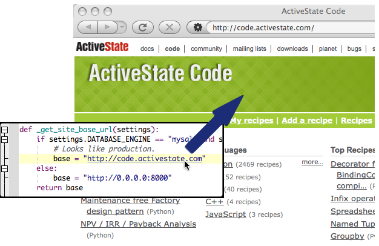
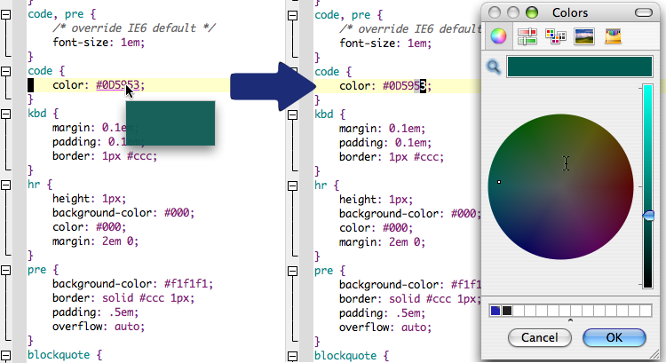

Komodo can interpret certain strings in the buffer as hyperlinks. 'Ctrl'+'mouse hover' ('Cmd'+'mouse hover' on Mac OS X) underlines the link. 'Ctrl'+'mouse click' performs an action specific to the type of hyperlink selected.
There are three default hyperlink types:
Code objects such as classes, methods, and subroutines link to their definition. This uses the built-in Go to Definition feature.
HTTP, HTTPS and FTP URLs are opened in the browser configured in Web & Browser preferences.
'Ctrl/Cmd'+'mouse hover' over a color value in CSS (including CSS embedded in HTML) shows a pop-up swatch for the selected color. 'Ctrl/Cmd'+'mouse click' raises a color picker dialog box for choosing and inserting a new color. Colors are inserted in RGB hexadecimal notation (e.g. "#ff0000" for red).
You can define your own hyperlinks using the ko.hyperlinks
functions in the Komodo JavaScript
API.
For example, the following macro will match the given pattern and when clicked, will try to open the URL "http://foo.com/$1", where $1 is the regular expression match group 1. You can use $0 through to $9.
var PEPRegexHandler = new ko.hyperlinks.RegexHandler(
"Python Enhancement Proposals",
new RegExp("PEP:\\s(\\d{4})"), /* pattern to match */
ko.browse.openUrlInDefaultBrowser,
"http://www.python.org/dev/peps/pep-$1", /* replacement string */
/* which languages the handler is active in - 'null' for all */
['Python', 'Text', 'HTML'],
Components.interfaces.ISciMoz.INDIC_PLAIN,
RGB(0x60,0x90,0xff)); /* indicator color */
ko.hyperlinks.addHandler(PEPRegexHandler);
You can set a macro trigger to set up this handler when Komodo starts.
Hyperlink handlers are checked in the order they were originally added. Since the built-in "Go to Definition" handler matches quite a few patterns, it may be necessary to preempt it by reordering the handlers. To do this, replace the last line of the macro above with the following:
var gotoHandler = ko.hyperlinks.getHandlerWithName("Goto Defintion");
ko.hyperlinks.removeHandler(gotoHandler);
ko.hyperlinks.addHandler(PEPRegexHandler);
ko.hyperlinks.addHandler(gotoHandler);